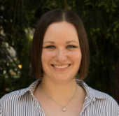
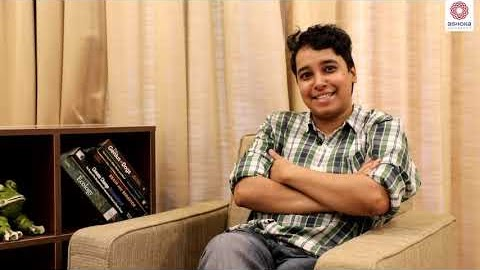
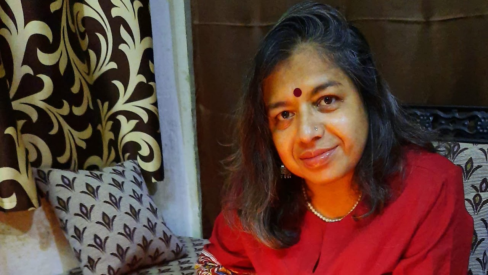
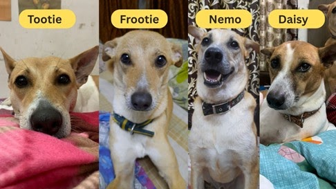

Dr Kathleen Munley
Arpita’s PhD supervisor is a genuinely kind, caring, and incredibly supportive mentor. Arpita is deeply grateful for Dr Munley’s steady encouragement, practical help, and unwavering support.
Acknowledgements

Arpita’s PhD supervisor is a genuinely kind, caring, and incredibly supportive mentor. Arpita is deeply grateful for Dr Munley’s steady encouragement, practical help, and unwavering support.

Arpita’s first research advisor, who sparked her interest in neuroscience. He welcomed her into his lab, gave her the independence to shape her own research, and profoundly shaped her undergraduate journey through thoughtful, brilliant mentorship.

Arpita’s mother, her rock, biggest cheerleader, and the driving force behind her journey to becoming a scientist.

The heart of Arpita's world. They have been by her side through every high and low, from school days to her current PhD journey.